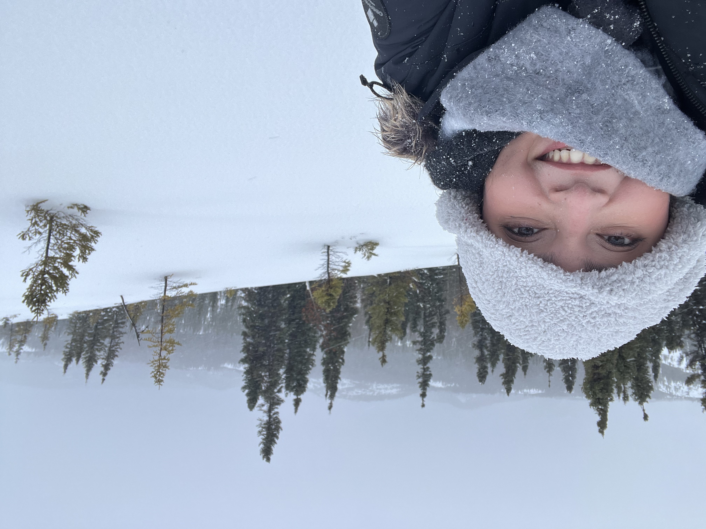
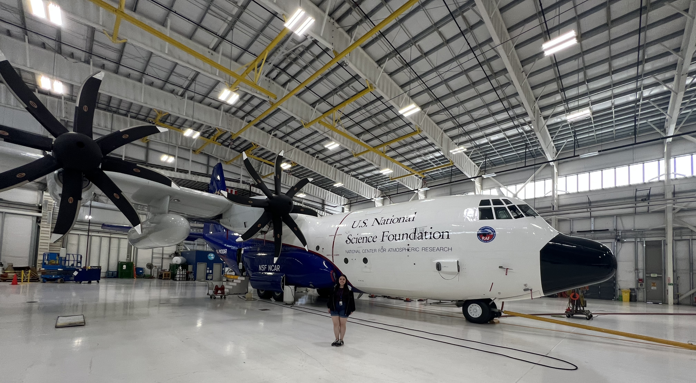

PHOTO
Ice Crystal Microphysics
Investigating the processes governing ice particle growth and evolution within winter storms.
Learn more →
Cloud Microphysics · Remote Sensing · Winter Storms
I use airborne in situ and remote sensing observations to study the microphysical properties of clouds and precipitation in winter storms.

A Little About Me
I am a Ph.D. candidate in the Department of Atmospheric and Climate Science at the University of Washington, where I also earned my M.S. in Atmospheric Sciences. Before coming to UW, I earned my B.S. in Atmospheric Science and Planetary Sciences from Purdue University (Boiler Up!).
I think snowflakes are one of nature’s most beautiful creations, so naturally, I’ve dedicated my graduate school career to studying them where they form: inside clouds. Along the way, I’ve had the opportunity to participate in airborne field campaigns and research internships that have broadened my experience in observational atmospheric science.
When I’m not thinking about snow, you can usually find me reading a good science fiction or fantasy book...or wishing I had more time to indulge in other hobbies. 😅
My Work
Investigating the processes governing ice particle growth and evolution within winter storms.
Learn more →Using coordinated airborne radar, lidar, and in situ observations to study clouds and precipitation.
Learn more →Observational Science
Airborne winter storm field campaign
Airborne winter storm field campaign
Scholarship